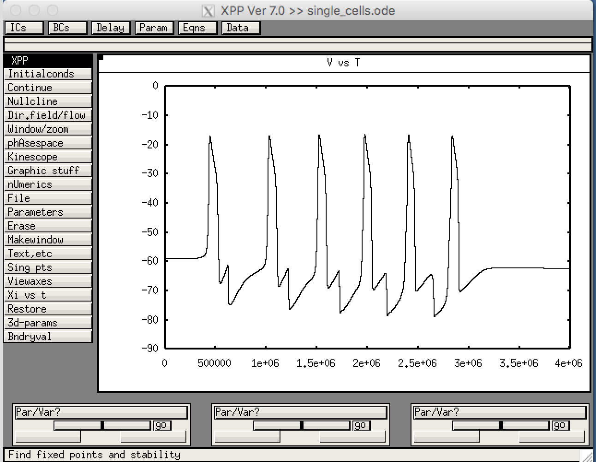
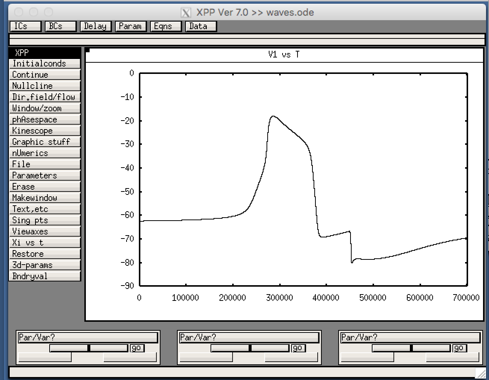

This is the readme for the models associated with the paper:
Conte C, Lee R, Sarkar M, Terman D (2017)
A mathematical model of recurrent spreading depolarizations.
J Comput Neurosci
The code requires XPP, which is freely available from http://www.math.pitt.edu/~bard/xpp/xpp.html
The XPP file ‘single_cells.ode’ models one neuron/astrocyte pair.
The XPP file ‘waves.ode’ models a network of 25 neuron/astrocyte pairs.
To run:
-------
Download and extract this archive. On linux/unix you can start with a command like:
xppaut single_cells.ode
Then select in the XPP program
File -> Read set
and select the file "single_cells.ode.set". Then select Integrate ->(G)o in which case you will see the graph:

This corresponds to Figure 2 in the paper.
waves.ode can be run in a similar way in which case you will see the graph:

To plot network activity:
Select in the XPP program
View -> Array -> Ok
You should then see
This corresponds to Figure 11 in the paper.